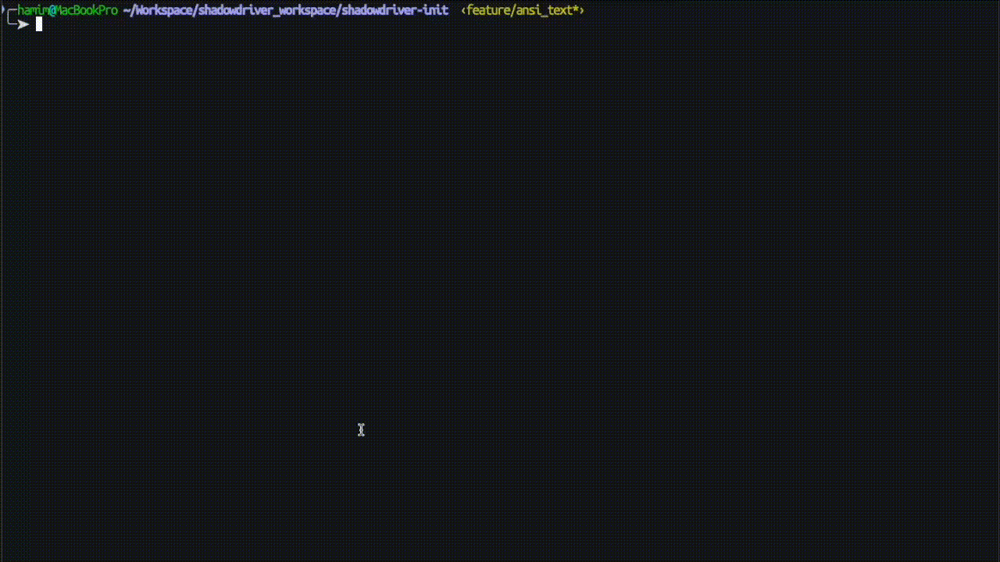

Fast, reliable testing for modern web applications inspired by Protractor and WebDriverJS
Get Started
Blazing-fast execution with powerful capabilities to speed up your testing.
Seamlessly integrates with WebDriver and expands functionality.
Backed by an active community for continuous improvements and support.
ShadowdriverJS is designed to provide a streamlined testing workflow by combining WebDriverJS capabilities with Protractor-style syntax. Here’s an overview of how it operates:
Start by setting up a configuration file, shadow.conf.js,
which defines your testing environment, browser settings, and test suite structure.
ShadowdriverJS
reads this file to configure tests according to WebDriverJS standards, allowing you to customize
settings for different environments.
Using Protractor-inspired syntax, ShadowdriverJS allows you to write
tests
with WebDriverJS methods, such as element(by.css()) for element selection. This
approach simplifies interactions within the DOM, making your tests both readable and
maintainable.
element(by.css('.button')).click();Execute your tests by running ShadowdriverJS with the configuration file and target test specifications. The CLI command enables selective test execution, making it easy to focus on specific test cases or suites.
shadowdriver run --config shadow.conf.js
--spec 'tests/*.spec.js'"ShadowdriverJS is hands-down the best testing tool I've used. It’s fast, intuitive, and just works!"
"With ShadowdriverJS, we reduced our testing time by 50%. A game-changer!"
"The community support is fantastic, and the API is extremely flexible."
Join thousands of developers using ShadowdriverJS to supercharge their testing workflows.
Installation & Docs